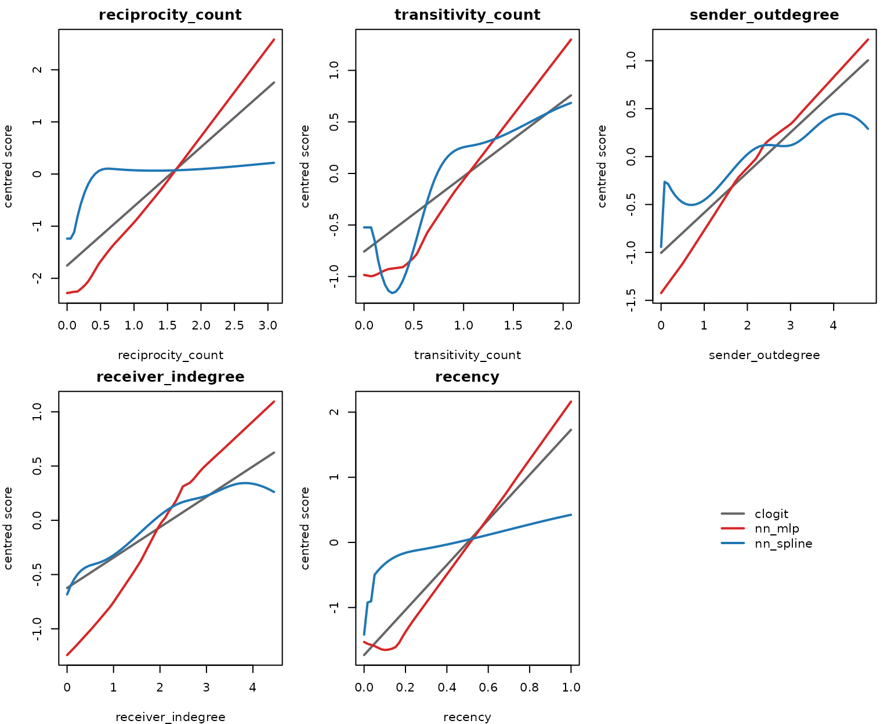
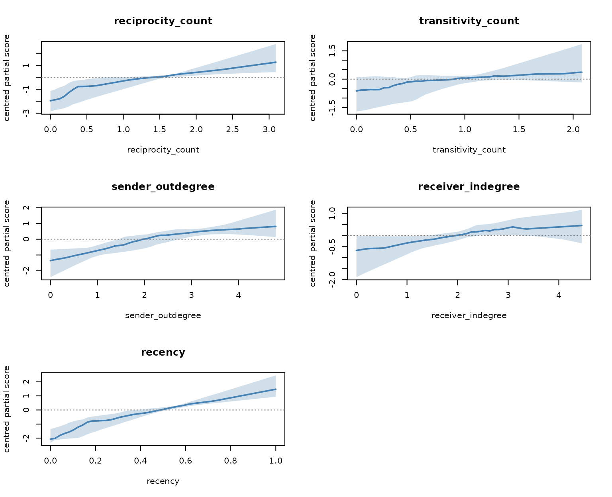
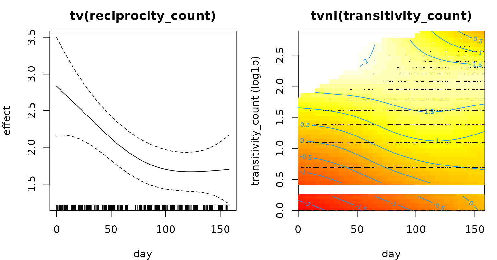

Case study: estimation backends on Email-EU-core
Source:vignettes/articles/case-email-eu-models.Rmd
case-email-eu-models.RmdEstimation backends on Email-EU-core
rem() fits the same case-control data with three
backends: conditional logistic regression
(method = "clogit"), a neural conditional-logistic model
(method = "nn") with either a multilayer perceptron or an
additive B-spline predictor, and a penalised degenerate-logistic model
(method = "gam") that admits time-varying effects. This
article fits all of them to the email_eu_core log, compares
their predictions on held-out events, and shows the effect curves each
backend estimates.
Data and case-control sample
To keep the page quick to build, the analysis uses the first 3,000
emails of the log. Each email is matched with three sampled non-events,
and five endogenous statistics are computed for every row from the
history of observed emails before it. The three counts are put on a
log1p() scale; the time since the last email on the same
dyad is mapped to a recency weight with
transform_recency(), with weight 0 for a dyad that has not
fired yet.
data(email_eu_core)
eu <- email_eu_core[seq_len(3000), ]
c(emails = nrow(eu), days = round(max(eu$time)),
actors = length(unique(c(eu$sender, eu$receiver))))
#> emails days actors
#> 3000 158 79
stats <- c("reciprocity_count", "transitivity_count", "sender_outdegree",
"receiver_indegree", "recency")
cc <- sample_non_events(eu, n_controls = 3, seed = 1)
feat <- endogenous_features(cc, stats = stats)
feat$recency <- transform_recency(feat$recency)
feat$recency[is.na(feat$recency)] <- 0
for (s in setdiff(stats, "recency")) feat[[s]] <- log1p(feat[[s]])The strata are split in time: the first 80% of the emails train the models, the last 20% are held out.
cut <- stats::quantile(unique(feat$stratum), 0.8)
train <- feat[feat$stratum <= cut, ]
test <- feat[feat$stratum > cut, ]
c(train_events = length(unique(train$stratum)),
test_events = length(unique(test$stratum)))
#> train_events test_events
#> 2400 600
fm <- event ~ reciprocity_count + transitivity_count + sender_outdegree +
receiver_indegree + recencyConditional logistic regression
fit_cl <- rem(fm, data = train, method = "clogit", stratum = "stratum")
round(summary(fit_cl)$coefficients[, c("coef", "se(coef)", "z")], 3)
#> coef se(coef) z
#> reciprocity_count 1.136 0.081 14.087
#> transitivity_count 0.729 0.096 7.611
#> sender_outdegree 0.419 0.042 10.090
#> receiver_indegree 0.280 0.048 5.797
#> recency 3.459 0.199 17.352Neural backends
method = "nn" trains on the same partial likelihood. A
fraction of the training strata (validation = 0.2) is held
back for early stopping. nn_control() selects the
architecture: a multilayer perceptron scores the five statistics
jointly, while architecture = "additive_spline" fits one
B-spline curve per statistic and adds them.
fit_mlp <- rem(fm, data = train, method = "nn", stratum = "stratum",
nn = nn_control(hidden = c(16, 8), epochs = 150,
patience = 10, seed = 1))
fit_add <- rem(fm, data = train, method = "nn", stratum = "stratum",
nn = nn_control(architecture = "additive_spline", spline_df = 8,
epochs = 300, seed = 1))
fit_mlp$fit
#> Neural conditional-logistic REM fit
#> architecture : 5 - 16 - 8 - 1 (relu)
#> parameters : 241
#> strata : 2400
#> best epoch : 39
#> val concord. : 0.846
fit_add$fit
#> Neural conditional-logistic REM fit
#> architecture : additive B-splines (df = 8 per feature, 5 features)
#> parameters : 41
#> strata : 2400
#> best epoch : 300
#> val concord. : 0.832The perceptron stopped at epoch 39; the spline model’s best validation loss was at epoch 300 of the 300 allowed, so its training stopped at the epoch limit rather than by early stopping.
Held-out comparison
On the held-out emails each model scores the event and its three controls. The table reports the share of strata in which the event gets the highest score (ties split evenly), and the mean log partial likelihood per held-out event. A model that ignores the covariates ranks the event first in one stratum out of four.
score_clogit <- function(d) as.vector(as.matrix(d[, stats]) %*% coef(fit_cl))
scores <- list(clogit = score_clogit(test),
nn_mlp = predict(fit_mlp$fit, test),
nn_spline = predict(fit_add$fit, test))
rank_first <- function(sc, d) mean(tapply(seq_len(nrow(d)), d$stratum, function(ix) {
s <- sc[ix]; e <- d$event[ix] == 1
if (s[e] < max(s)) 0 else 1 / sum(s == max(s))
}))
log_pl <- function(sc, d) mean(tapply(seq_len(nrow(d)), d$stratum, function(ix) {
s <- sc[ix]; s[d$event[ix] == 1] - (max(s) + log(sum(exp(s - max(s)))))
}))
held_out <- data.frame(
model = names(scores),
event_ranked_1 = vapply(scores, rank_first, 0, d = test),
mean_log_pl = vapply(scores, log_pl, 0, d = test))
knitr::kable(held_out, digits = 3, row.names = FALSE)| model | event_ranked_1 | mean_log_pl |
|---|---|---|
| clogit | 0.817 | -0.531 |
| nn_mlp | 0.808 | -0.544 |
| nn_spline | 0.823 | -0.521 |
All three models rank the held-out event first in between 0.808 and 0.823 of the strata, against 0.25 for a model without covariates. The highest mean log partial likelihood on the held-out emails is that of nn_spline.
Effect curves
Each panel varies one statistic over its 1st–99th percentile range with the other four at their training means, and shows the change in score centred at its mean over the range: the straight line of the conditional logit and the partial-dependence curves of the two neural models.
centre <- function(v) v - mean(v)
mu <- colMeans(train[, stats])
cols <- c(clogit = "grey40", nn_mlp = "#d62728", nn_spline = "#1f77b4")
op <- par(mfrow = c(2, 3), mar = c(4, 4, 2, 1))
for (s in stats) {
g <- seq(stats::quantile(train[[s]], 0.01), stats::quantile(train[[s]], 0.99),
length.out = 60)
nd <- as.data.frame(matrix(rep(mu, each = 60), 60, length(stats),
dimnames = list(NULL, stats)))
nd[[s]] <- g
y <- cbind(clogit = centre(score_clogit(nd)),
nn_mlp = centre(predict(fit_mlp$fit, nd)),
nn_spline = centre(predict(fit_add$fit, nd)))
matplot(g, y, type = "l", lty = 1, lwd = 2, col = cols, xlab = s,
ylab = "centred score", main = s)
}
plot.new()
legend("center", legend = names(cols), col = cols, lwd = 2, bty = "n")
par(op)Between the 1st and the 99th percentile the score increases for 5 of the 5 statistics under the conditional logit, 5 under the perceptron and 5 under the spline model. The spline curves change most over the lowest values, where many rows share the value 0 (a dyad, sender or receiver with no earlier email of that kind), and some have kinks there: the B-spline knots are placed at quantiles of the feature, and with many tied values several knots fall close together.
Bootstrap bands for the neural model
The neural backend has no coefficient table.
nn_uncertainty() resamples the training strata with
replacement, refits the network on each resample with the same
nn_control() settings, and returns pointwise bands for the
centred partial-dependence curves and an interval for the in-sample
concordance. Fifteen resamples keep the page quick to build; the bands
are coarse at that number.
unc <- nn_uncertainty(fit_mlp, data = train, stratum = "stratum", B = 15,
seed = 1)
unc
#> Bootstrap uncertainty for a neural rem() fit
#> resamples : 15 (15 successful)
#> level : 95%
#> features : reciprocity_count, transitivity_count, sender_outdegree, receiver_indegree, recency
#> concordance : 0.835 [0.807, 0.841]
#> Use plot() for per-feature partial-dependence bands.
plot(unc)
nn_uncertainty() evaluates each curve from the 1st to
the 99th percentile of the feature, with the other features at their
means.
Time-varying effects with the gam backend
The gam backend fits a case-1-control design, so a new
sample with one control per email is drawn and widened to one row per
email. tv(x) lets the effect of x change
smoothly over time; tvnl(x) lets it change in both time and
the value of x (a tensor-product smooth). Both are compared
with the model that holds the two effects constant.
cc1 <- sample_non_events(eu, n_controls = 1, seed = 2)
f1 <- endogenous_features(cc1, stats = c("reciprocity_count", "transitivity_count"))
for (s in c("reciprocity_count", "transitivity_count")) f1[[s]] <- log1p(f1[[s]])
wide <- widen_case_control(f1, covariates = c("reciprocity_count",
"transitivity_count", "time"))
fit_const <- rem(~ reciprocity_count + transitivity_count, data = wide,
method = "gam")
fit_tv <- rem(~ tv(reciprocity_count, k = 6) +
tvnl(transitivity_count, k = c(5, 5)),
data = wide, method = "gam", time = "time")
aic <- c(constant = AIC(fit_const$fit), time_varying = AIC(fit_tv$fit))
round(aic, 1)
#> constant time_varying
#> 1849.4 1813.4
summary(fit_tv)$s.table
#> edf Ref.df Chi.sq p-value
#> s(.time):reciprocity_count 2.912997 3.371272 372.4179 0
#> te(.T,.X_transitivity_count):.I 6.441087 7.716032 322.0352 0The time-varying model’s AIC is 36.1 lower than that of the constant-effect model.
op <- par(mfrow = c(1, 2), mar = c(4, 4, 2.5, 1))
plot(fit_tv$fit, select = 1, shade = TRUE, xlab = "day", ylab = "effect",
main = "tv(reciprocity_count)")
abline(h = 0, col = "grey60")
plot(fit_tv$fit, select = 2, scheme = 2, xlab = "day",
ylab = "transitivity_count (log1p)", main = "tvnl(transitivity_count)")
par(op)In the left panel the coefficient of reciprocity_count
is 2.83 on day 0 and 1.70 on day 158; the dashed lines are ±2 standard
errors. The right panel shows the tensor-product surface of
tvnl(transitivity_count) over day and count; mgcv leaves
blank the combinations of day and count with no data near them, which
includes the gap between a count of 0 and a count of 1 on the
log1p() scale.